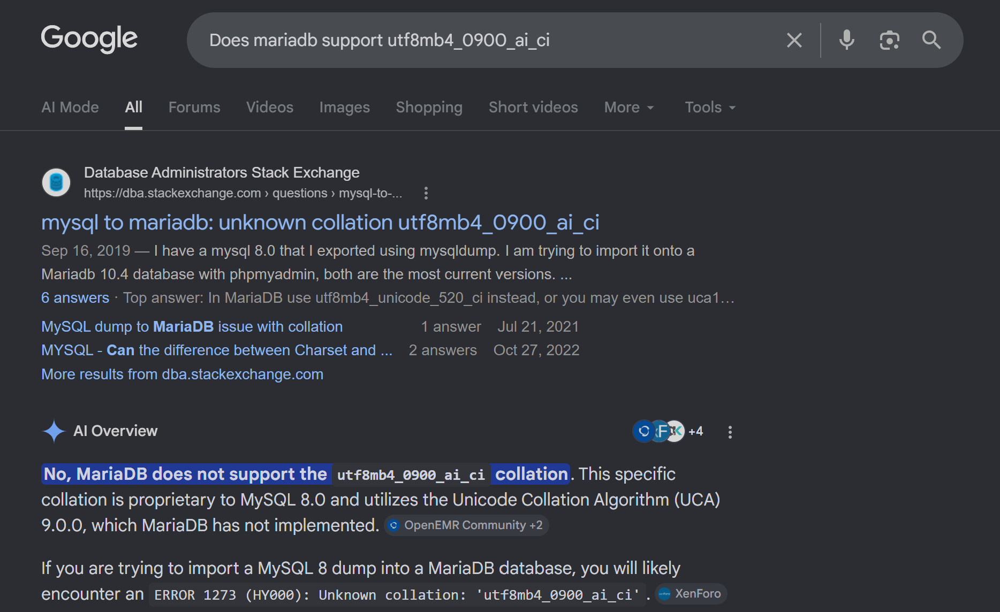
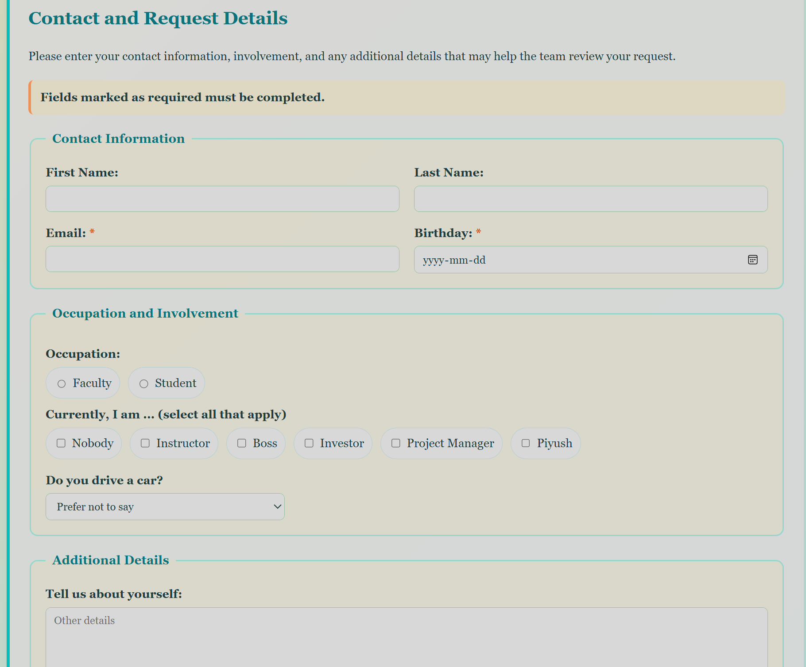
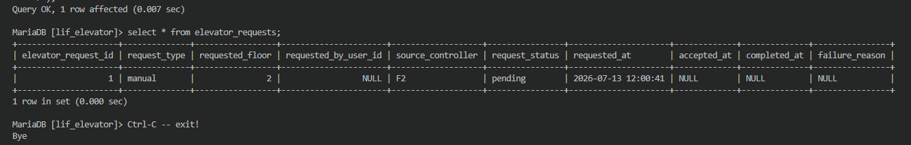
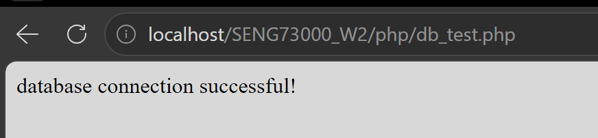
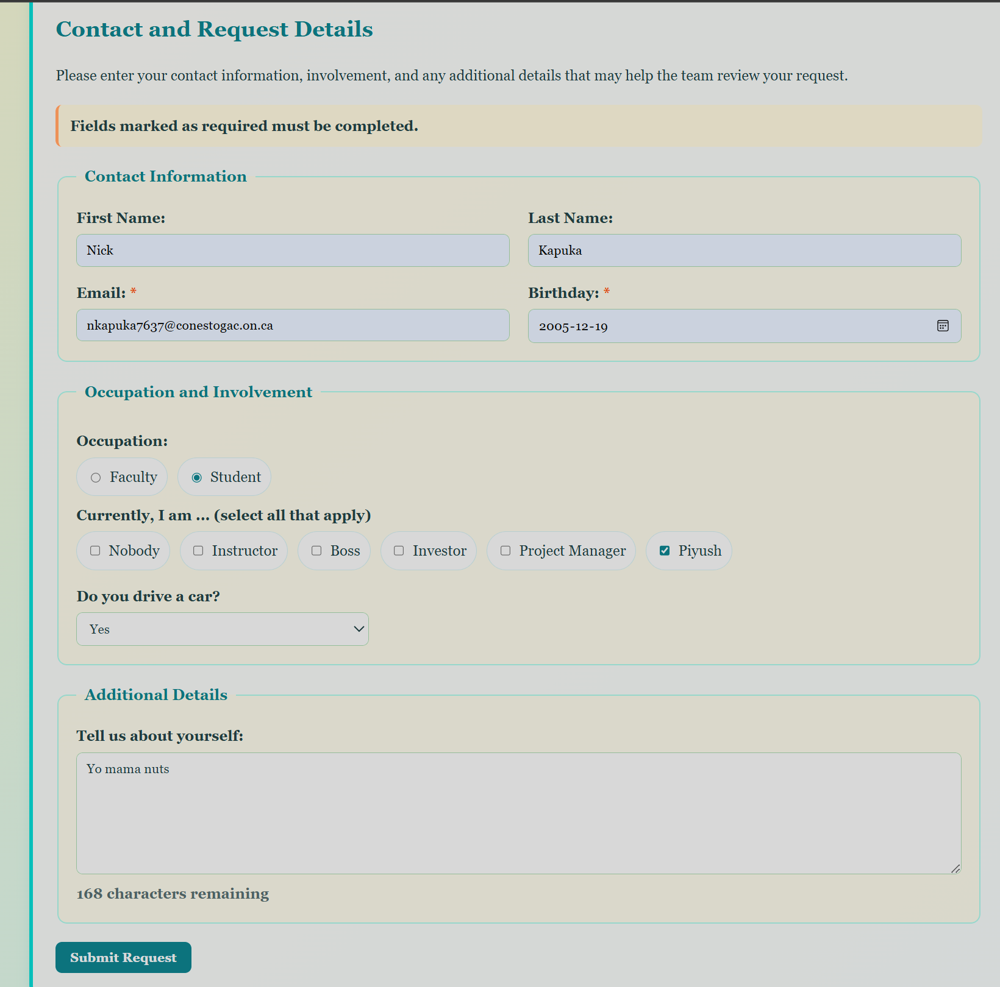
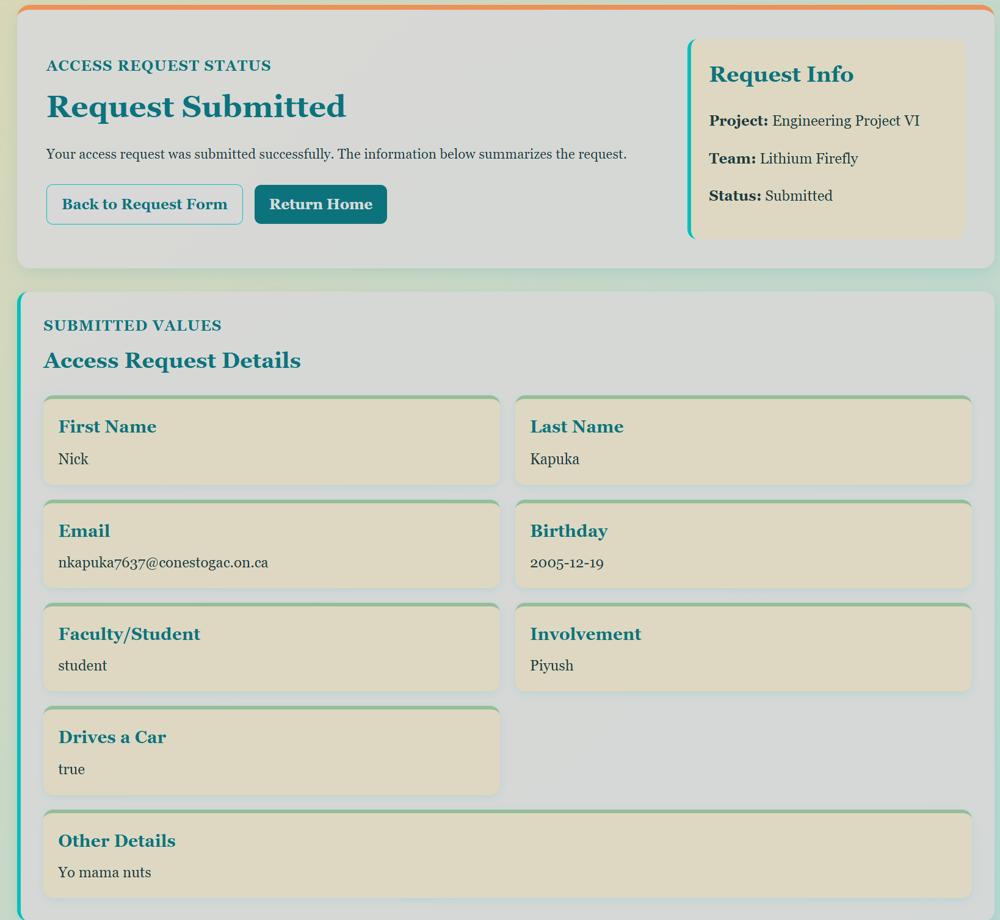

Purpose: Adapt/implement/review RY's DB setup and finish the proper setup. Sync to R-Pi.
Component or tool: MariaDB
Result: Completed the three-table MariaDB structure, tested records and relationships, created a restricted database user, verified PHP connectivity, and connected the access-request form to the database.
Team contribution: Received RY's DB and continued to work on my own as it was further ahead.
Reviewing RY's DB work
Here is what I received from RY:
After asking for DB progress over 2-3 days, she provided a zipfile of her work (rather than GitHub like I asked) but this was fine.
Here are the files I received:
-- MySQL dump 10.13 Distrib 8.4.10, for Linux (x86_64)
--
-- Host: localhost Database: elevatorDB
-- ------------------------------------------------------
-- Server version 8.4.10-0ubuntu0.26.04.1
/*!40101 SET @OLD_CHARACTER_SET_CLIENT=@@CHARACTER_SET_CLIENT */;
/*!40101 SET @OLD_CHARACTER_SET_RESULTS=@@CHARACTER_SET_RESULTS */;
/*!40101 SET @OLD_COLLATION_CONNECTION=@@COLLATION_CONNECTION */;
/*!50503 SET NAMES utf8mb4 */;
/*!40103 SET @OLD_TIME_ZONE=@@TIME_ZONE */;
/*!40103 SET TIME_ZONE='+00:00' */;
/*!40014 SET @OLD_UNIQUE_CHECKS=@@UNIQUE_CHECKS, UNIQUE_CHECKS=0 */;
/*!40014 SET @OLD_FOREIGN_KEY_CHECKS=@@FOREIGN_KEY_CHECKS, FOREIGN_KEY_CHECKS=0 */;
/*!40101 SET @OLD_SQL_MODE=@@SQL_MODE, SQL_MODE='NO_AUTO_VALUE_ON_ZERO' */;
/*!40111 SET @OLD_SQL_NOTES=@@SQL_NOTES, SQL_NOTES=0 */;
--
-- Table structure for table `access_requests`
--
DROP TABLE IF EXISTS `access_requests`;
/*!40101 SET @saved_cs_client = @@character_set_client */;
/*!50503 SET character_set_client = utf8mb4 */;
CREATE TABLE `access_requests` (
`id` int NOT NULL AUTO_INCREMENT,
`first_name` varchar(50) DEFAULT NULL,
`last_name` varchar(50) DEFAULT NULL,
`email` varchar(100) NOT NULL,
`birthday` date DEFAULT NULL,
`occupation` enum('faculty','student') DEFAULT NULL,
`involvement` varchar(255) DEFAULT NULL,
`drives_car` varchar(20) DEFAULT NULL,
`details` text,
`status` enum('pending','approved','denied') DEFAULT 'pending',
`submitted_at` timestamp NULL DEFAULT CURRENT_TIMESTAMP,
PRIMARY KEY (`id`)
) ENGINE=InnoDB DEFAULT CHARSET=utf8mb4 COLLATE=utf8mb4_0900_ai_ci;
/*!40101 SET character_set_client = @saved_cs_client */;
--
-- Table structure for table `users`
--
DROP TABLE IF EXISTS `users`;
/*!40101 SET @saved_cs_client = @@character_set_client */;
/*!50503 SET character_set_client = utf8mb4 */;
CREATE TABLE `users` (
`id` int NOT NULL AUTO_INCREMENT,
`username` varchar(50) NOT NULL,
`password_hash` varchar(255) NOT NULL,
`created_at` timestamp NULL DEFAULT CURRENT_TIMESTAMP,
PRIMARY KEY (`id`),
UNIQUE KEY `username` (`username`)
) ENGINE=InnoDB AUTO_INCREMENT=2 DEFAULT CHARSET=utf8mb4 COLLATE=utf8mb4_0900_ai_ci;
/*!40101 SET character_set_client = @saved_cs_client */;
/*!40103 SET TIME_ZONE=@OLD_TIME_ZONE */;
/*!40101 SET SQL_MODE=@OLD_SQL_MODE */;
/*!40014 SET FOREIGN_KEY_CHECKS=@OLD_FOREIGN_KEY_CHECKS */;
/*!40014 SET UNIQUE_CHECKS=@OLD_UNIQUE_CHECKS */;
/*!40101 SET CHARACTER_SET_CLIENT=@OLD_CHARACTER_SET_CLIENT */;
/*!40101 SET CHARACTER_SET_RESULTS=@OLD_CHARACTER_SET_RESULTS */;
/*!40101 SET COLLATION_CONNECTION=@OLD_COLLATION_CONNECTION */;
/*!40111 SET SQL_NOTES=@OLD_SQL_NOTES */;
This schema is okay but the one I created in my last entry was slightly further ahead.
It also runs:
DROP TABLE IF EXISTS ...
Which, if imported, can overwrite tables with matching names. Not a deal breaker but there should be other ways to handle this.
It also features a Window compatability problem via:
COLLATE=utf8mb4_0900_ai_ci
This collation belongs to MySQL 8 and isn’t fully supported by XAMPP MariaDB 10.4 server.
A google search confirms this:

Search result confirming the MySQL-only collation compatibility issue
It should work but it needs to be developed further to be functional.
DB Setup
Continuing with DB setup from last entry
Last time I created two tables:
CREATE TABLE access_requests
CREATE TABLE users
The first one worked with request_access logic, storing whatever users enter when trying to request access to the website. All the entries come from the form on the website:

Website access-request form used to collect database values
The other table, users, is what allows users to log into the website and will be used to reference credentials. It stores usernames, hashed passwords, emails, last logged in dates, etc.
From here, we need one more table, the actual elevator control and logging table. I created it below:
MariaDB [(none)]> use lif_elevator
Database changed
MariaDB [lif_elevator]> CREATE TABLE elevator_requests (
-> elevator_request_id INT UNSIGNED NOT NULL AUTO_INCREMENT,
-> request_type VARCHAR(20) NOT NULL,
-> requested_floor TINYINT UNSIGNED NOT NULL,
-> requested_by_user_id INT UNSIGNED,
-> source_controller VARCHAR(30) NOT NULL,
-> request_status VARCHAR(20) NOT NULL DEFAULT 'pending',
-> requested_at DATETIME NOT NULL DEFAULT CURRENT_TIMESTAMP,
-> accepted_at DATETIME,
-> completed_at DATETIME,
-> failure_reason VARCHAR(255),
-> PRIMARY KEY (elevator_request_id),
-> CONSTRAINT fk_elevator_request_user
-> FOREIGN KEY (requested_by_user_id)
-> REFERENCES users(user_id)
-> ON UPDATE CASCADE
-> ON DELETE SET NULL
-> ) ENGINE = InnoDB;
Query OK, 0 rows affected (0.027 sec)
MariaDB [lif_elevator]> show tables;
+------------------------+
| Tables_in_lif_elevator |
+------------------------+
| access_requests |
| elevator_requests |
| users |
+------------------------+
3 rows in set (0.000 sec)
MariaDB [lif_elevator]>
This table is essentially all the elevator handling logic. It contains request types (manual vs remote), the floors, where the request came from, when it was requested, if it is pending/completed, etc.
MariaDB output showing the inserted access-request test entry
This tests entering a new user into the DB. Request_id is 1 as it is the first formal user, username was entered during the login (writing it in), user_role is user since this is a normal user for now.
created_at was not provided as it is manually set when the table was originally created,
-> request_status VARCHAR(20) NOT NULL DEFAULT 'pending',
-> submitted_at DATETIME NOT NULL DEFAULT CURRENT_TIMESTAMP,
-> reviewed_at DATETIME,
Automatically sets the status to pending, the submitted_at is based on the current time which keeps a nice log of when stuff happens.
Cleaning up the output a bit to get the important parts,
Since adding the proof via code was formatted poorly, here is a screenshot of the output:

MariaDB output showing the manual elevator-request logging test
Hashing and Testing
The next thing that was done was hashing a password. For this, we can use PHP's built-in password system. This is done by a few commands:
password_hash() converts the password into a hash
PASSWORD_DEFAULT tells PHP to use the default hashing algorithm it has
echo prints the hash
PHP_EOL adds a new line
php.exe -r executes a short php command outside of a dedicated file.
This will update the "pending" to "approved" and show when it was reviewed (approved).
SET specifies what to change (or what to SET) the values to.
SET request_status = 'approved' changes it from 'pending'.
WHERE request_id = 1 is important as it specifies what entry/row should be changed. Without it, it can risk approving every request in the table as it does not have a direct ID to work with. WHERE helps MariaDB know what exactly to change.
MariaDB [lif_elevator]> SHOW GRANTS FOR 'LiF_Admin'@'localhost';
+------------------------------------------------------------------------------------------------------------------+
| Grants for LiF_Admin@localhost |
+------------------------------------------------------------------------------------------------------------------+
| GRANT USAGE ON *.* TO `LiF_Admin`@`localhost` IDENTIFIED BY PASSWORD '*408E424C79DA18DC6AE143AB93AD239605AF5957' |
| GRANT SELECT, INSERT, UPDATE, DELETE ON `lif_elevator`.* TO `LiF_Admin`@`localhost` |
+------------------------------------------------------------------------------------------------------------------+
2 rows in set (0.000 sec)
Now we can test logging in,
nicol@Yoga MINGW64 /c/xampp/htdocs/SENG73000_W2 (NK_Logbook)
$ mysql -u LiF_Admin -p -h localhost -P 3306 lif_elevator
Enter password: *******
Welcome to the MariaDB monitor. Commands end with ; or \g.
Your MariaDB connection id is 34
Server version: 10.4.32-MariaDB mariadb.org binary distribution
Copyright (c) 2000, 2018, Oracle, MariaDB Corporation Ab and others.
Type 'help;' or '\h' for help. Type '\c' to clear the current input statement.
MariaDB [lif_elevator]>
Next, let's test if it all saved and actually worked,
MariaDB [lif_elevator]> show tables;
+------------------------+
| Tables_in_lif_elevator |
+------------------------+
| access_requests |
| elevator_requests |
| users |
+------------------------+
3 rows in set (0.001 sec)
MariaDB [lif_elevator]> select request_id, email, request_status FROM access_requests;
+------------+------------------+----------------+
| request_id | email | request_status |
+------------+------------------+----------------+
| 1 | test@example.com | approved |
+------------+------------------+----------------+
1 row in set (0.001 sec)
MariaDB [lif_elevator]>
Testing DB and Website Connectivity
With the DB basically setup, we need to set the PHP up to form the website-DB connection. This is done in a small PHP file:
This sets the DB name (configured above). as well as the password. Then, it utilizes a try-catch to try connecting and catches any mistakes.
With this, we can make a small "db_test.php" file with just:
<?php
// load db.php but only once
// __DIR__ is start from folder containing PHP files
require_once __DIR__ . '/db.php';
echo "database connection successful!";
Then, connecting to this using localhost should print "database connection successful!".
http://localhost/SENG73000_W2/php/db_test.php

Successful PHP PDO connection to the MariaDB database
Excellent! That means:
Browser --> Apache --> PHP --> PDO --> MariaDB
This pipeline is functional.
Rewriting PHP to interact with the DB
Request access
From here, I'll need to modify request_access.php to interact with the DB.
// format it into SQL using try-catch, my beloved:
try {
$sql =
"
INSERT INTO access_requqests (
first_name,
last_name,
email,
birthday,
person_type,
involvement,
drivers_car,
details)
VALUES (
:first_name,
:last_name,
:email,
:birthday,
:person_type,
:involvement,
:drivers_car,
:details
)
";
\(statement = \)pdo->prepare($sql);
$statement->execute([
':first_name' => $firstname,
':last_name' => $lastname,
':email' => $email,
':birthday' => $birthday,
':person_type' => $fac_or_student,
':involvement' => $involvementText,
':drives_car' => $drives_car,
':details' => $details
]);
\(requestId = \)pdo->lastInsertId();
$requestSaved = true;
}
catch (PDOException $e)
{
$errors[] = "The access request could not be saved/failed to load";
error_log($e->getMessage());
}
Instead of storing this login request into cookies like before, it now includes the working PDO connection, receives and validates the form, converts the checkbox array into one string, prepares an "INSERT" statement for SQL, passes the values into that statement, and obtains the generated request ID.
From here, the entire php code can be quickly compiled and checked:
nicol@Yoga MINGW64 /c/xampp/htdocs/SENG73000_W2 (NK_Logbook)
$ /c/xampp/php/php.exe -l php/request_access.php
No syntax errors detected in php/request_access.php
Looks good, no issues!
We can then request access from the webpage:

Completed website access-request form before submission
Then, we go to the request submitted php page:

Website confirmation after the access request was submitted
And lastly, we can check if it works in Maria DB itself: